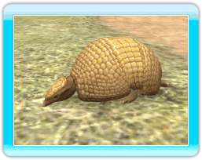
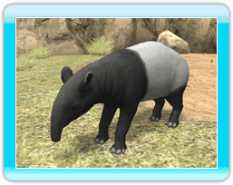

●Lion asiatique
●Lion asiatique
On trouve cet animal carnivore dans les forêts.
Il se déplace généralement en petites troupes,
mais il chasse seul.

●Zèbre de Grévy
Cet herbivore aux rayures uniques en leur
genre vit dans la savane ou dans les régions
semi-désertiques. Lorsqu'il est éveillé, il passe
le plus clair de son temps à manger.

●Hippopotame
On trouve principalement cet énorme herbivore
dans le sud de l'Afrique. Il passe le plus clair
de son temps dans l'eau, et est capable de
rester sous l'eau pendant près de 5 minutes.

●Panda géant
Cet herbivore bien connu a son habitat dans
les bois de bambous, dont il mâche les
feuilles à longueur de journée.

●Éléphant d'Afrique
Cet herbivore imposant vit dans la savane ou
dans les forêts. Il se baigne souvent pour
empêcher sa peau de sécher sous le soleil
brûlant.

●Tatou à 3 bandes
Ce minuscule omnivore se plaît dans la forêt et
la savane. Il ne fait que 20 cm de long et se
roule en boule pour se protéger contre les
prédateurs.

●Ours noir
On trouve cet omnivore principalement dans
les forêts. Il est particulièrement habile pour
grimper aux arbres.

●Tapir de Malaisie
Cet herbivore vit généralement dans les forêts
à proximité de plans d'eau, et il se déplace
seul ou en couple.